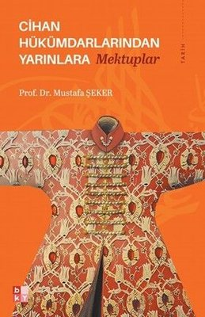

Hocanın kitapları


Cihan Hükümdarlarından Yarınlara Mektuplar
Satın al

Ders Kitaplarında Ermeni Meselesi
Satın al
Bölüm

Eğitim ve Medeniyet
Hazreti Ömer’in Kandili Bize Ne Anlatıyor?
Mustafa Şeker 21:02
Devlet malı gerçekten kimin malıdır?

Eğitim ve Medeniyet
Dolandırıcıların Yeni Silahı Yapay Zekâ!
Mustafa Şeker 16:10

Eğitim ve Medeniyet
İnsanın En Büyük Sermayesi Para Değil Dürüstlüktür
Mustafa Şeker 12:45

Eğitim ve Medeniyet
Pembe İncili Kaftan Bize Bugün Ne Anlatıyor?
Mustafa Şeker 18:17

Eğitim ve Medeniyet
Diziler Tarihi Çarpıtmamalı: Gerçek Sultanı Anlatın
Mustafa Şeker 21:49

Eğitim ve Medeniyet
Tarih Dizileri Tarihi Böyle mi Anlatmalı?
Mustafa Şeker 20:27

Eğitim ve Medeniyet
İlim Var Edep Yoksa Ne Olur?
Mustafa Şeker 20:39

Eğitim ve Medeniyet
“Güneş İlk Hocamın Kabrine Vursun!”
Mustafa Şeker 16:02

Eğitim ve Medeniyet
Akdamar Adası’nda Neler Yaşandı?
Mustafa Şeker 18:53

Eğitim ve Medeniyet
Seyyitlerin Ve Şeriflerin Bilinmeyen Tarihi
Mustafa Şeker 19:18

Eğitim ve Medeniyet
Doğu'da Kardeşlik Kazandı
Mustafa Şeker 15:01

Eğitim ve Medeniyet
Osmanlı Padişahları Neden Hacca Gitmedi?
Mustafa Şeker 19:07

Eğitim ve Medeniyet
Osmanlı'da Kardeş Katli Neden Yapıldı?
Mehmet Yavuz · Mustafa Şeker 14:33

Eğitim ve Medeniyet
Osmanlı İnsanı Bir Günde Neler Yapardı?
Mustafa Şeker 19:42

Eğitim ve Medeniyet
Tarihte Devletleri Yıkan 10 Büyük Hata
Mustafa Şeker 14:51

Eğitim ve Medeniyet
İlmin ve Medeniyetin Kalbi: Semerkant
Mustafa Şeker 20:03

Eğitim ve Medeniyet
Ata Yurduna Manevi Yolculuk
Mustafa Şeker 16:09

Eğitim ve Medeniyet
Sınıfın "Yaramaz" Çocuğu Aslında Bir Dâhi mi?
Mustafa Şeker 19:43

Eğitim ve Medeniyet
Fatih Sultan Mehmet Bugün Okusa Okuldan Atılırdı!
Mustafa Şeker 18:26

Eğitim ve Medeniyet
Çocuk Yetiştirirken Yapılan En Büyük Hata!
Mustafa Şeker 19:44

Eğitim ve Medeniyet
Avrupa Çocukları Satarken Ecdadımız Neler Yapıyordu?
Mustafa Şeker 16:29

Eğitim ve Medeniyet
Batı Kopyası Eğitim Bizi Kurtarmaz!
Mustafa Şeker 19:43
Eğitim ve Medeniyet
Dünyayı Kandıran Finlandiya Sistemi!
Mustafa Şeker 11:51

Eğitim ve Medeniyet
Eğitimde Kaybettiğimiz Hazine
Mustafa Şeker 12:45

Eğitim ve Medeniyet
Finlandiya'nın Eğitim Sırrı ve Bizim Hatalarımız
Mustafa Şeker 16:14